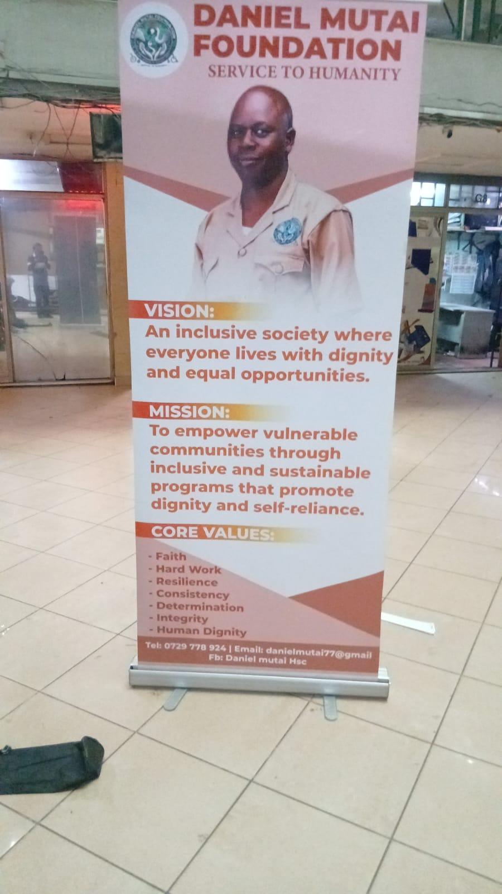

Giving the work a structure
The Daniel Mutai Foundation.
For most of the last 18 years, Daniel's humanitarian work has run informally — funded personally, coordinated through well-wishers, and carried out alongside a full-time teaching role. The Daniel Mutai Foundation formalises that work, with Daniel serving as Founder & Chairperson.
Vision
An inclusive society where everyone lives with dignity and equal opportunities.
Mission
To empower vulnerable communities through inclusive and sustainable programs that promote dignity and self-reliance.

Core values
What guides the Foundation's work.
Hard Work
Resilience
Consistency
Determination
Integrity
Human Dignity
What the Foundation covers
The same five pillars, under one structure.
Mobility & assistive devices
Coordinating the sourcing and delivery of wheelchairs, canes and other mobility aids.
Inclusive education
Supporting children with disabilities to access and stay in school.
School water & sanitation
Water and sanitation infrastructure projects in partner schools.
Eye health
Referral and support for people needing eye care.
Shelter & housing support
Helping vulnerable families move from makeshift shelter toward decent, durable housing.
Governance & documentation
What will be published here as the Foundation is formalised.
Registration documents and financial reporting are being prepared. As these are finalised, this page will link directly to them in the Evidence Library, so that partners and award committees can verify the Foundation's status independently.
Contact: +254 729 778 924 · danielmutai1977@gmail.com · Facebook: Daniel Mutai HSC